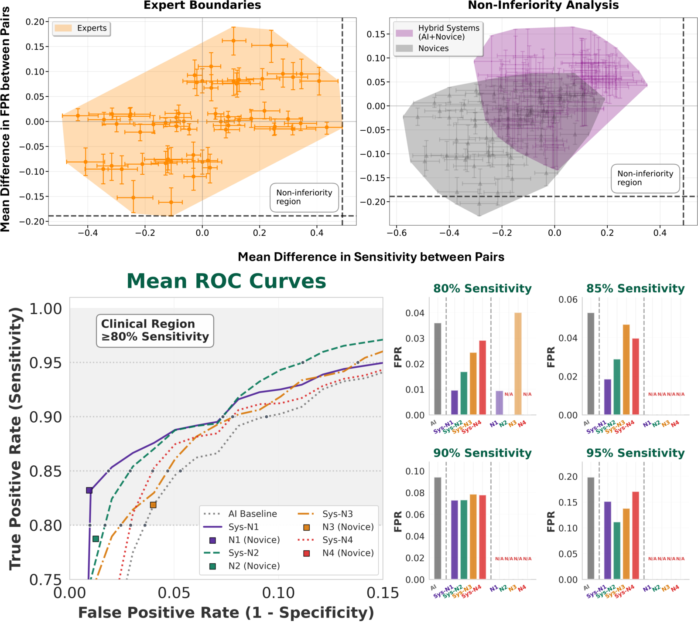
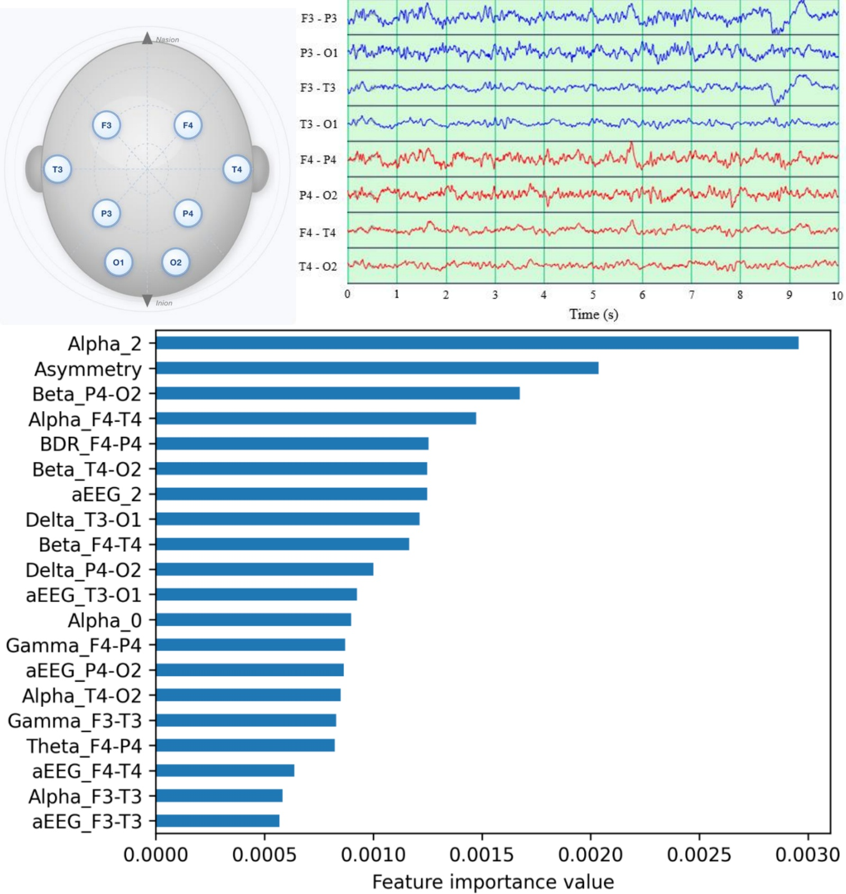
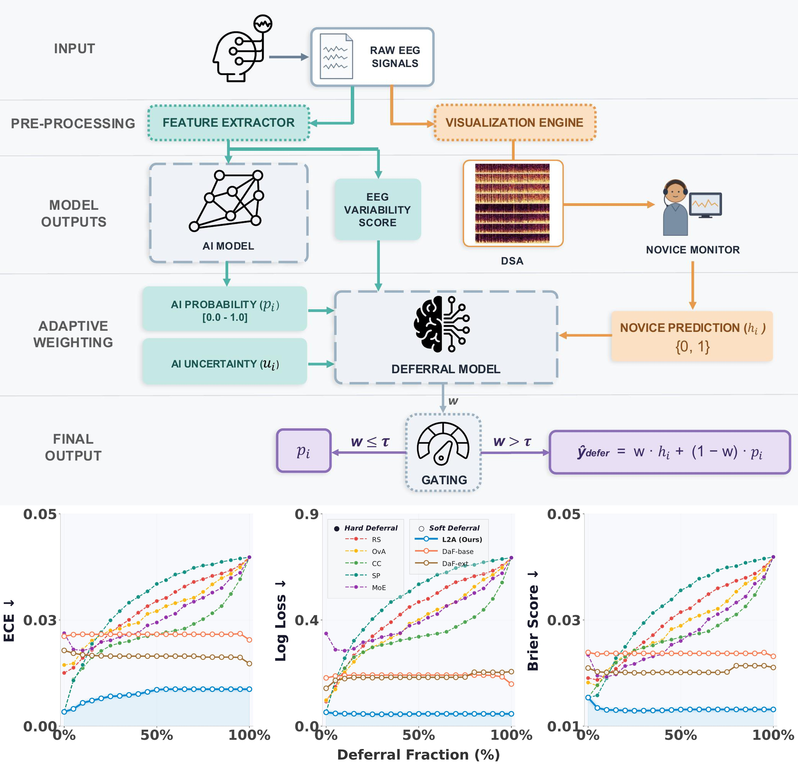
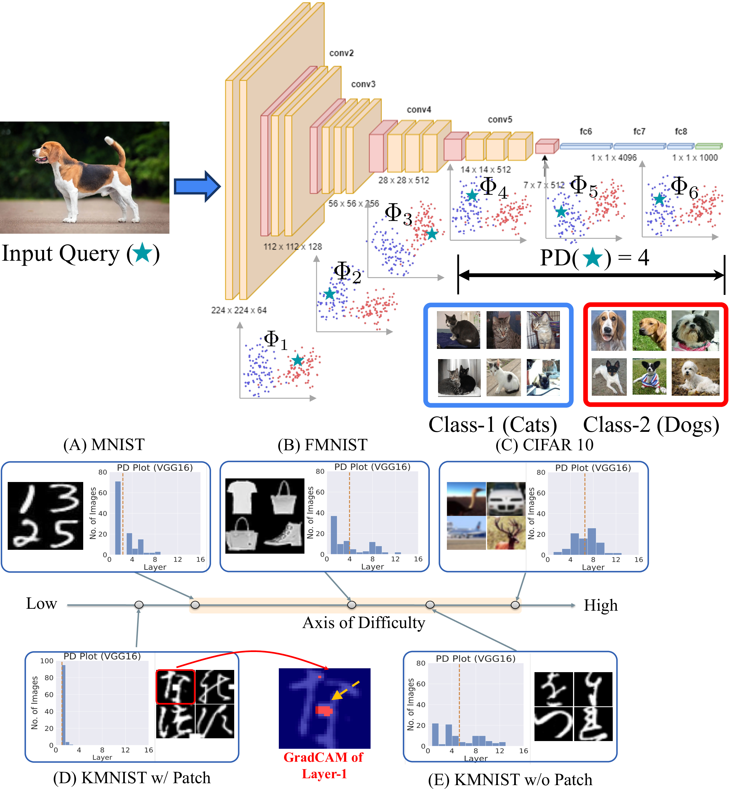
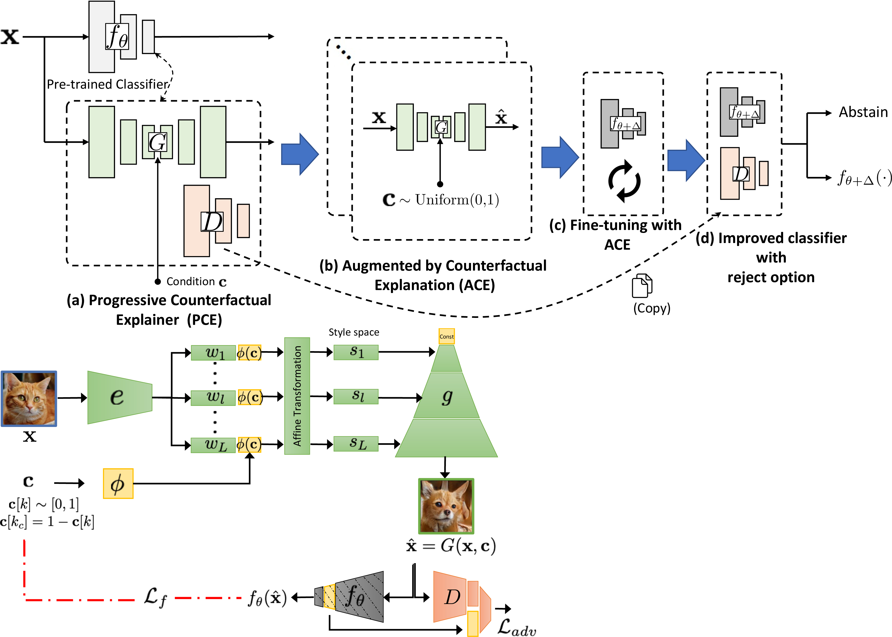
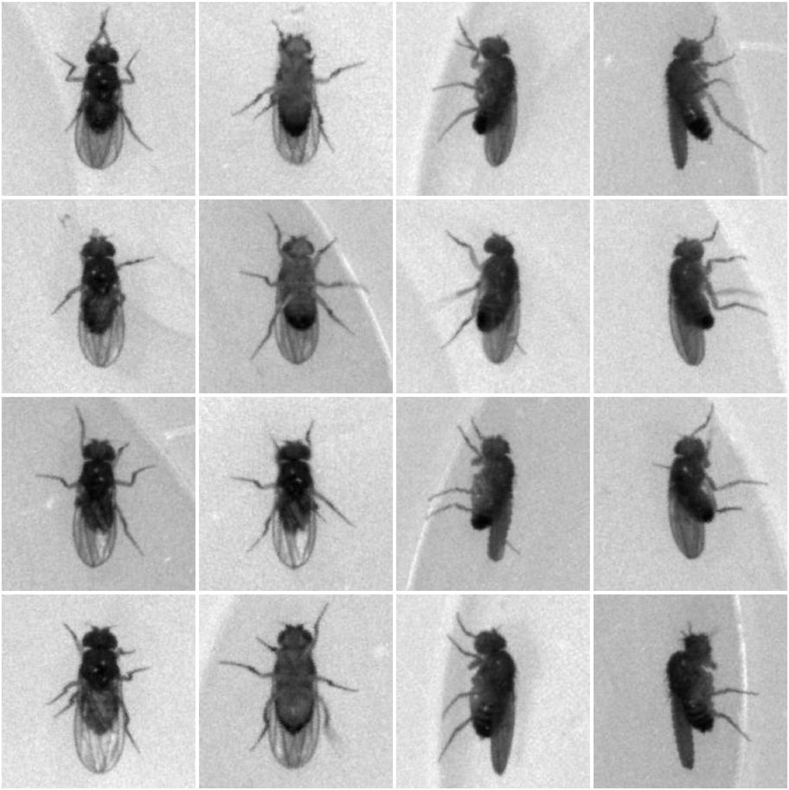
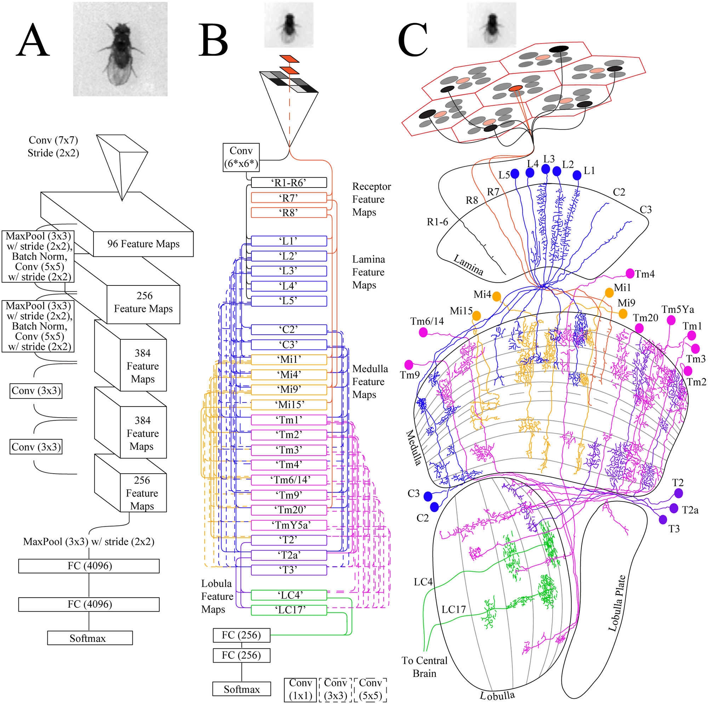
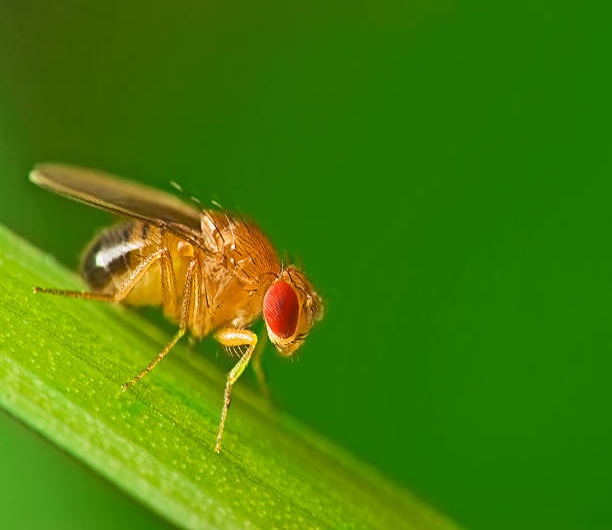

|
Nihal Murali
I’m a fifth-year Ph.D. candidate in the Intelligent Systems Program at the
University of Pittsburgh, jointly advised by
Kayhan Batmanghelich (BatmanLab, Boston University) and
Shyam Visweswaran (VisLab). My research lies at the intersection of machine learning, medicine, and human–AI collaboration—developing algorithms that make AI systems safer, more interpretable, and clinically reliable.
Broadly, I study how AI models behave under uncertainty and how they interact with human expertise in high-stakes decision making. My work spans from understanding model failures such as shortcut and spurious learning to designing hybrid human–AI systems that integrate algorithmic predictions with human judgment for expert-level performance in healthcare applications.
“When should AI decide, and when should it defer?
How can human expertise be modeled and trusted in the loop?”
My broader goal is to advance AI systems that understand their limitations and collaborate effectively with humans—especially in domains where reliability and safety are non-negotiable.
I was a visiting researcher jointly collaborating with the Machine Learning Research Group (MLRG) at the University of Guelph (Ontario, Canada)
and the University of Toronto, advised by Prof. Graham W. Taylor and Prof. Joel D. Levine,
on computer-vision models for biological data.
Previously, I interned at the Robotics Research Center (RRC) at the
International Institute of Information Technology, Hyderabad, where I worked with
Prof. Madhav Krishna and
Dr. Krishna Murthy on robotics and perception.
I received my M.E. in Software Systems and B.E. (Hons.) in Electrical and Electronics Engineering from
BITS Pilani, where I was advised by
Prof. Surekha Bhanot.
|
|
|

|
Hybrid novice–AI system achieves expert-level performance in intraoperative ischemia detection
Nihal Murali,
Amir I. Mina,
Harsh Sinha,
Joshua W. Anderson,
Yash Raka,
Hung-Ching Chang,
Homa K. Amiri,
Parthasarathy D. Thirumala,
Kayhan Batmanghelich†,
Shyam Visweswaran†
Under review, npj Digital Medicine (2026)
medRxiv preprint
†These authors contributed equally as corresponding authors
Paper
/
Code
Pairs a minimally-trained novice with an AI model to catch cerebral ischemia from intraoperative EEG—matching board-certified neurophysiologists (statistically non-inferior) while halving the AI's false alarms. Expert-grade surgical monitoring, without the expert.
|
|

|
Machine learning to detect intraoperative ischemia from electroencephalography in carotid endarterectomy surgery
Shyam Visweswaran*,
Mehdi Nourelahi*,
Amir I. Mina,
Jessi U. Espino,
Nihal Murali,
Kayhan Batmanghelich,
Parthasarathy D. Thirumala
Under review, npj Health Systems (2026)
*Equal contribution
Paper
Benchmarks five machine-learning models for detecting cerebral ischemia from quantitative EEG during surgery. Random forests lead on sensitivity and precision—and the top predictors, alpha-band power and hemispheric asymmetry, mirror exactly what expert readers watch for.
|
|

|
Human–AI Deferral under Limited Expert Availability: A Study in Intraoperative Ischemia Detection
Nihal Murali,
Karim Elzokm,
Parthasarathy D. Thirumala,
Kayhan Batmanghelich†,
Shyam Visweswaran†
MLHC 2026
†Joint senior authors
Paper
/
Poster
/
Code
When expert neurophysiologists are scarce and AI alone isn't safe enough for the operating room, can a non-expert help close the gap? Human–AI deferral routes only the hardest cases to a minimally-trained novice—and with just 5–10% novice involvement lifts precision and sensitivity by ~40% over the AI alone. The proposed method, Learning to Augment (L2A), softly blends novice and AI predictions to stay robust and well-calibrated even when the novice is unreliable, concentrating its rare hand-offs so long stretches of monitoring run untouched.
|
|

|
Beyond Distribution Shift: Spurious Features Through the Lens of Training Dynamics
Nihal Murali,
Aahlad Puli,
Ke Yu,
Rajesh Ranganath,
Kayhan Batmanghelich
TMLR 2023, ICMLW 2023
Paper
/
Github
/
Video
/
Poster
/
Slides
/
Talk
Not all spurious features are harmful—a shortcut only hurts generalization when it's easier to learn than the real signal. By watching a network's training dynamics, the paper shows these harmful shortcuts reveal themselves in the early layers, early in training—catchable and fixable before they ever reach deployment.
|
|

|
Augmentation by Counterfactual Explanation – Fixing an Overconfident Classifier
Sumedha Singla*,
Nihal Murali*,
Forough Arabshahi,
Sofia Triantafyllou,
Kayhan Batmanghelich
WACV 2023
*Equal contribution
Paper
/
GitHub
An accurate model that's also overconfident is dangerous—in the clinic or the driver's seat. ACE fine-tunes a classifier on counterfactual augmentations—realistic images nudged across its decision boundary—so it flags ambiguous and out-of-distribution inputs instead of guessing confidently, all without sacrificing accuracy.
|
|

|
Classification and re-identification of fruit fly individuals across days with convolutional neural networks
Nihal Murali,
Jon Schneider,
Joel Levine,
Graham Taylor†
WACV 2019
†Corresponding author
Paper
/
GitHub
/
Dataset
The first system to re-identify individual, unmarked fruit flies across days—no tags, no paint, no frame-by-frame tracking. Trained on ~3M images of 60 flies, it names and beats a key failure mode—"cross-day accuracy decline"—using domain-adversarial training to learn day-invariant features, keeping most flies above 90% accuracy.
|
|

|
Can Drosophila melanogaster tell who’s who?
Jon Schneider,
Nihal Murali,
Graham Taylor,
Joel Levine†
PLOS ONE 2018
†Corresponding author
Paper
/
GitHub
/
Dataset
/
News
Could a fruit fly recognize another fruit fly? Building a "fly-eye" network that mirrors Drosophila's real visual connectome, this work shows their low-resolution vision—just ~29×29 pixels—carries enough to tell individuals apart, something humans do near chance. A far richer visual world than assumed.
|
|

|
Classification and Re-Identification of Fruit Flies using Deep Convolutional Networks
Bachelor’s Thesis, BITS Pilani
Advisor: Prof. Surekha Bhanot
Thesis
/
Code (Re-ID)
/
Code (Fly-Eye)
The undergraduate work behind the WACV 2019 paper: recognizing individual Drosophila with ResNet CNNs, tag-free. Same-day accuracy is near-perfect—but a few "problem flies" collapse on later days as their looks drift, revealing temporal shift, not model capacity, as the real obstacle. Domain-adversarial training then learns cues that identify the fly while ignoring the day, lifting ≥90%-accuracy re-identification from 47 to 57 of 60 flies.
|
|
{kind=link}